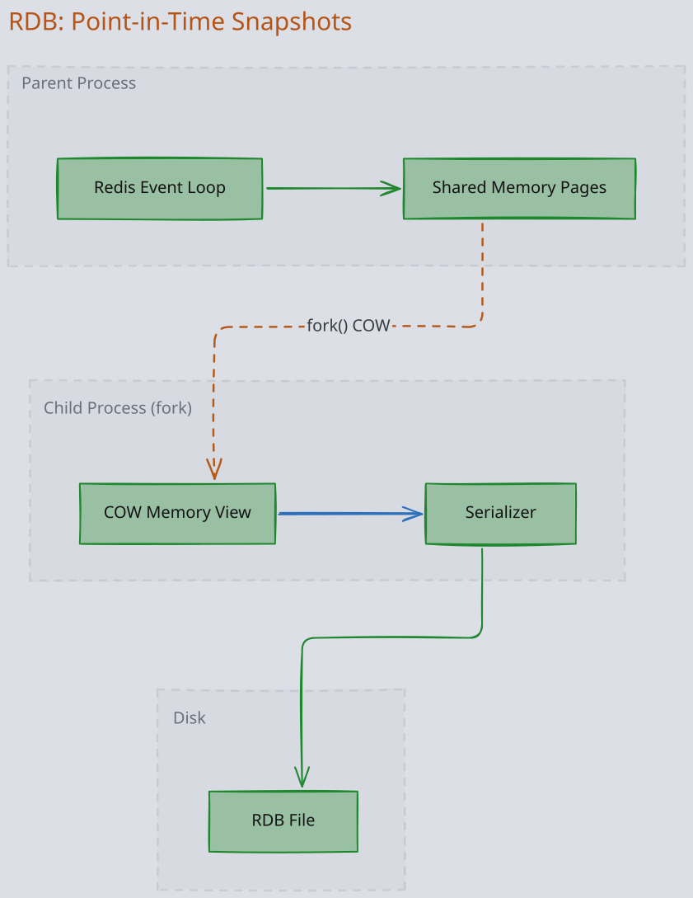
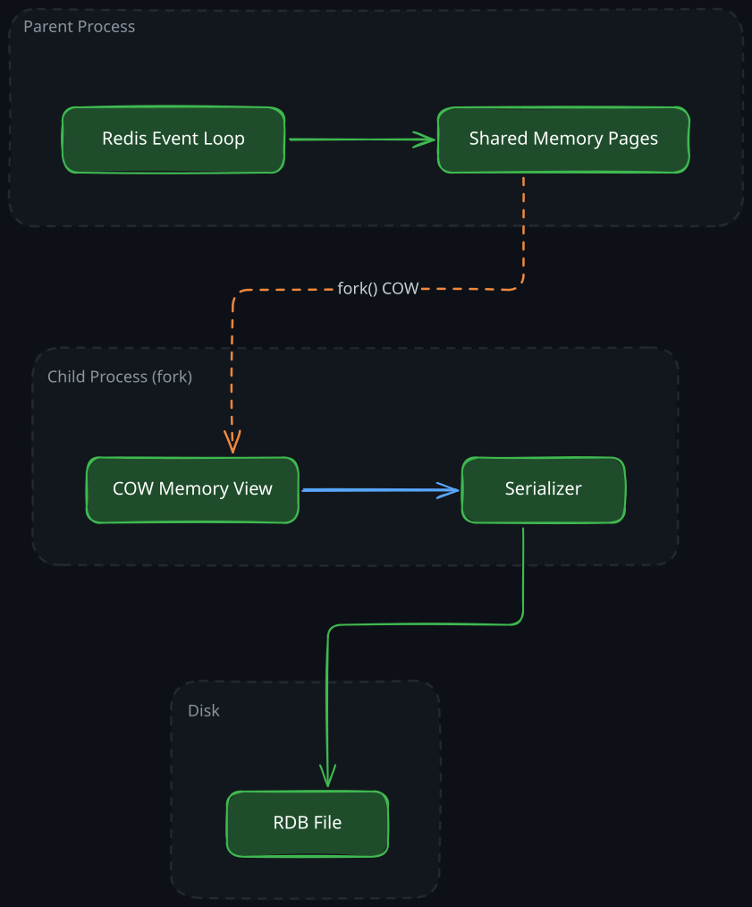
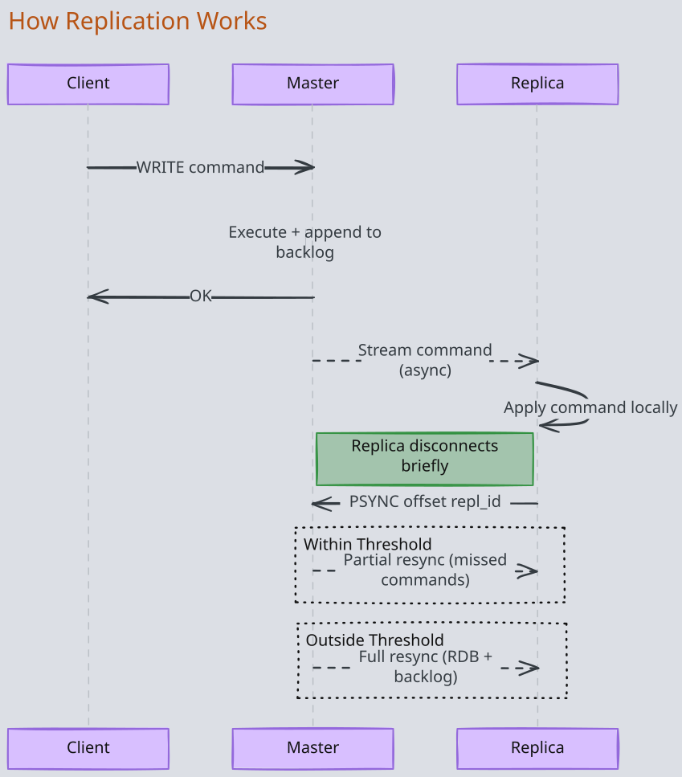
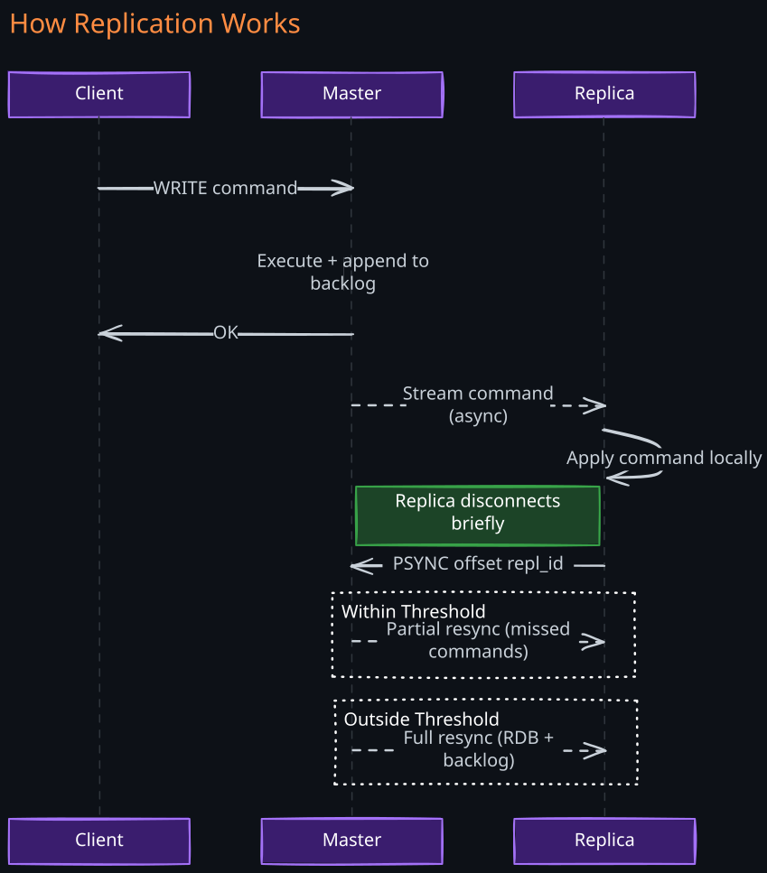
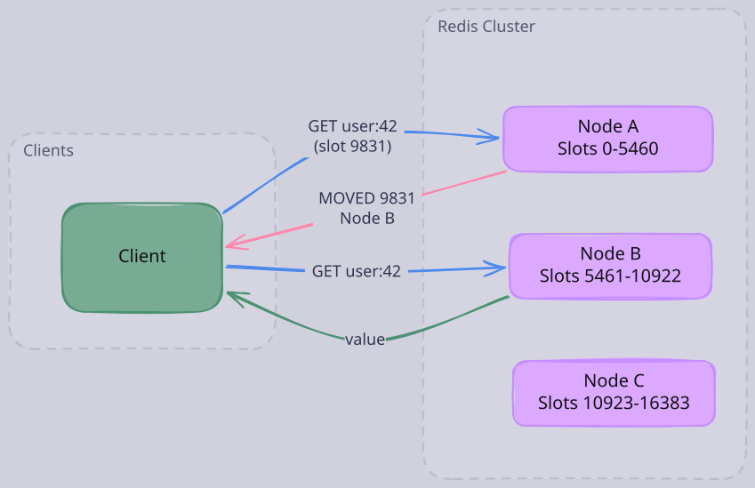
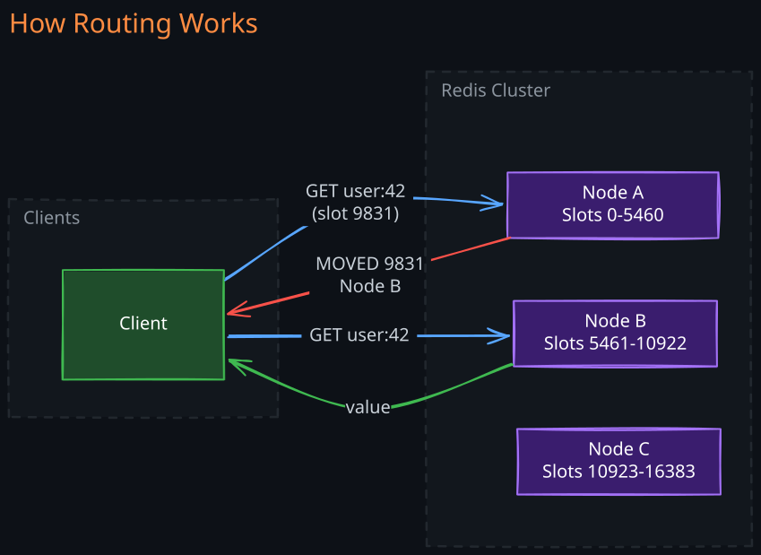

The Story
Everyone told Salvatore Sanfilippo (antirez) that single-threaded was a dead-end design. He stubbornly refused to add threading for over a decade because he understood something others didn’t: for an in-memory store, the bottleneck is network I/O and serialization, not CPU. A single core can do millions of hash lookups per second — you’ll saturate the network long before you saturate the CPU. He was right for twelve years. Threading was only added partially in Redis 6.0, and only for I/O handling — the core data operations are still single-threaded. The lesson: sometimes the person who refuses to follow conventional wisdom understands the problem better than the crowd.
Redis (REmote DIctionary Server) is an in-memory data structure server. Understanding Redis deeply requires understanding a single design bet: if you keep all data in RAM and process every command on a single thread, you can deliver microsecond latency with zero lock contention while supporting arbitrarily complex data structures. Every architectural decision in Redis flows from this principle.
Related Topics: 01-Caching-Techniques, 04-Distributed-Lock, Memcached
1. The Design Insight: Why Single-Threaded?
The conventional wisdom is that high-throughput servers need many threads. Redis rejects this entirely, and the reasoning is worth understanding from first principles.
The bottleneck in most database systems is not CPU — it is I/O wait. A traditional database spends most of its time waiting for disk seeks, network round-trips, or lock acquisition. Multithreading exists to overlap these waits: while one thread blocks on disk, another can serve a different request.
Redis eliminates the root cause. When all data lives in RAM, every operation is a memory access — there is no disk I/O to block on. A hash table lookup in memory takes nanoseconds. If no operation ever blocks, there is nothing to overlap, and threads buy you nothing except complexity.
A single-threaded event loop multiplexes thousands of client connections without context switches. This gives Redis several properties that would be extremely difficult to achieve in a multithreaded design:
- Every command is atomic by default. There is no interleaving of operations, no need for mutexes or CAS loops.
INCR,LPUSH,ZADD— all atomic without any locking code. - Predictable latency. No lock contention means no variance from thread scheduling or priority inversion. Latency is determined by command complexity, nothing else.
- Simple reasoning about correctness. Any sequence of commands executes in exactly the order received. This makes Lua scripts and transactions straightforward — they run to completion without interruption.
The tradeoff is real: a single slow command (like KEYS * scanning millions of keys) blocks every other client. Redis mitigates this by keeping individual commands fast (sub-microsecond for simple operations) and offloading heavy work — persistence, replication, lazy deletion — to background threads. The main command-processing loop remains single-threaded.
Modern Redis (6.0+) introduced I/O threading for network read/write to improve throughput on high-connection-count workloads, but command execution itself remains single-threaded. This preserves the atomicity guarantee while removing the network I/O bottleneck that emerges at very high connection counts.
2. Data Structures: Purpose-Built for Specific Problems
Redis is not a generic key-value store. Each data structure exists because a specific class of problems demands it, and each is backed by an implementation chosen for its performance characteristics.
1. Strings
The simplest structure: a key maps to a binary-safe byte sequence (up to 512 MB). Strings support atomic integer operations (INCR, DECR, INCRBY), making them the natural choice for counters — page views, API call counts, rate limit windows. The atomicity comes for free from the single-threaded model.
SET user:123:name "Alice" # set a key
GET user:123:name # retrieve value
SET session:abc "data" EX 3600 # set with 1-hour TTL
SETNX lock:order:99 "holder-id" # set only if not exists (for locks)
INCR page:views:homepage # atomic increment → returns new value
INCRBY user:123:balance 50 # atomic increment by N
MSET k1 "v1" k2 "v2" k3 "v3" # set multiple keys atomically
MGET k1 k2 k3 # get multiple keys in one round-trip2. Hashes
A hash maps a key to a collection of field-value pairs — essentially a nested dictionary. The motivation is memory efficiency for structured objects. Storing a user profile as individual keys (user:123:name, user:123:email) wastes memory on per-key overhead. A single hash (HSET user:123 name "Alice" email "alice@example.com") stores the same data with far less overhead because Redis uses a compact encoding (ziplist) for small hashes.
HSET user:123 name "Alice" email "a@b.com" age 30 # set multiple fields
HGET user:123 name # get one field
HMGET user:123 name email # get multiple fields
HGETALL user:123 # get all fields and values
HINCRBY user:123 age 1 # atomic increment on a field
HDEL user:123 email # delete a field
HEXISTS user:123 name # check if field exists → 1 or 03. Lists
Doubly-linked lists supporting O(1) push/pop at both ends. The primary use case is message queues and task pipelines. LPUSH + BRPOP gives you a blocking producer-consumer queue with no external dependencies. BRPOP is a blocking pop that suspends the client until an item arrives, making it far more efficient than polling.
LPUSH queue:tasks "task-1" # push to head (left)
RPUSH queue:tasks "task-2" # push to tail (right)
RPOP queue:tasks # pop from tail → "task-2"
BRPOP queue:tasks 30 # blocking pop, wait up to 30s
LRANGE queue:tasks 0 -1 # get all elements (0 to last)
LLEN queue:tasks # list length
LINDEX queue:tasks 0 # get element at index4. Sets
Unordered collections of unique strings. Useful for membership testing and set-theoretic operations — computing intersections, unions, and differences. A practical example: tracking which users are online (SADD online:users "user:123") and computing mutual friends via SINTER.
SADD online:users "alice" "bob" # add members
SREM online:users "bob" # remove a member
SISMEMBER online:users "alice" # membership check → 1 or 0
SMEMBERS online:users # get all members
SCARD online:users # count of members
SINTER friends:alice friends:bob # mutual friends (intersection)
SUNION tags:post:1 tags:post:2 # all tags across posts (union)
SDIFF friends:alice friends:bob # friends of Alice but not Bob5. Sorted Sets (ZSETs)
This is Redis’s most distinctive data structure and arguably its most powerful. A sorted set maps members to floating-point scores, maintaining order by score at all times.
Internally, sorted sets use a skip list — a probabilistic data structure that provides O(log n) insertion, deletion, and lookup by score, combined with a hash table for O(1) lookup by member. The skip list is the key insight: it gives you the ordering guarantees of a balanced BST with simpler implementation and excellent cache locality.
The canonical use case is leaderboards. ZADD leaderboard 1500 "Alice" inserts or updates a score in O(log n). ZREVRANGE leaderboard 0 9 WITHSCORES returns the top 10 players in O(log n + 10). ZRANK leaderboard "Alice" returns a player’s rank in O(log n). No other data store gives you this combination of operations at this speed without building a custom index.
%% ZADD {keyName} {score} {value} %%
ZADD leaderboard 1000 "Alice"
ZADD leaderboard 1200 "Bob"
ZADD leaderboard 900 "Charlie"
ZREVRANGE leaderboard 0 2 WITHSCORES # top 3 by highest score
ZRANGE leaderboard 0 2 WITHSCORES # bottom 3 by lowest score
ZRANK leaderboard "Alice" # 0-based rank (ascending)
ZREVRANK leaderboard "Alice" # 0-based rank (descending)
ZSCORE leaderboard "Alice" # get Alice's score
ZINCRBY leaderboard 100 "Alice" # atomic score increment
ZRANGEBYSCORE leaderboard 900 1100 # members with score in range
ZREM leaderboard "Charlie" # remove a member
ZCARD leaderboard # count of members6. HyperLogLog
A probabilistic data structure for cardinality estimation — counting unique elements in a set. The insight is that exact counting of unique items requires O(n) memory (you must store every item), but if you accept ~0.81% standard error, HyperLogLog does it in a fixed 12 KB regardless of the number of unique elements.
This is indispensable for counting unique visitors, unique search queries, or unique IP addresses at scale. Counting 100 million unique visitors per day exactly would require gigabytes of memory for a set. HyperLogLog does it in 12 KB.
PFADD unique:visitors "user:123" "user:456" "user:789"
PFCOUNT unique:visitors # approximate unique count
PFMERGE combined day1:visitors day2:visitors # merge two HLLs7. Bitmaps
Not a separate data type — bitmaps are strings treated as bit arrays. SETBIT and GETBIT operate on individual bits. The use case is boolean state tracking over large populations. Tracking whether each of 100 million users was active today requires only 12.5 MB (1 bit per user). BITCOUNT gives you the total active count. BITOP AND across multiple days gives you users active on all of those days.
SETBIT active:2026-04-07 123456 1 # mark user 123456 as active today
GETBIT active:2026-04-07 123456 # check if active → 1 or 0
BITCOUNT active:2026-04-07 # total active users today
BITOP AND active:both active:2026-04-06 active:2026-04-07 # active both days
BITOP OR active:either active:2026-04-06 active:2026-04-07 # active either day8. Streams
A log-like append-only data structure for ordered event processing. Each entry gets a monotonic ID, and Redis can attach consumer groups plus acknowledgment tracking on top of the stored log.
The important high-level idea is:
- Pub/Sub is connection-oriented fan-out.
- Streams are stored data with delivery bookkeeping.
Streams fill the gap between Redis’s simple list-based queues (no consumer groups, no acknowledgment) and a full platform like 01-Kafka. They are appropriate when you need ordered processing and recovery from consumer failure, but not the partitioning model and retention scale of a dedicated distributed log.
For the internal mechanics — radix-tree plus listpack storage, blocked reader wake-up, consumer-group cursors, and Pending Entries List recovery — see 01-02-Redis-PubSub-and-Streams-Internals.
XADD events * user "alice" action "click" # append entry (auto ID)
XLEN events # stream length
XRANGE events - + # read all entries
XRANGE events 1700000000000-0 + COUNT 10 # read 10 from timestamp
# Consumer groups
XGROUP CREATE events mygroup $ MKSTREAM # create group at latest
XREADGROUP GROUP mygroup consumer1 COUNT 5 BLOCK 2000 STREAMS events >
# read new entries, block 2s
XACK events mygroup 1700000000000-0 # acknowledge processing
XPENDING events mygroup # check unacknowledged entries9. Geospatial Indexes
Built on sorted sets using geohash encoding. A geohash converts a (longitude, latitude) pair into a single 52-bit integer that preserves spatial locality — nearby points have similar geohash values. Storing these as scores in a sorted set lets Redis answer radius queries efficiently using range scans on the sorted set.
GEOADD locations 13.361389 38.115556 "Palermo"
GEOADD locations 15.087269 37.502669 "Catania"
GEODIST locations "Palermo" "Catania" km # distance between two points
GEOPOS locations "Palermo" # get coordinates
GEOSEARCH locations FROMLONLAT 15.01 37.05 BYRADIUS 100 km ASC # find places within 100km3. Persistence: RDB vs AOF
Redis offers two persistence mechanisms with fundamentally different I/O characteristics. Understanding the tradeoffs requires understanding how each interacts with the operating system.
1. RDB: Point-in-Time Snapshots
RDB persistence (Redis Database Persistance) creates a binary snapshot of the entire dataset at configured intervals (e.g., “save after 60 seconds if at least 1000 keys changed”).
How it works at the I/O level: Redis calls fork() to create a child process. The child inherits a read-only view of the parent’s memory pages via the operating system’s copy-on-write (COW) mechanism. The child serializes the entire dataset to a temporary file, then atomically renames it to the RDB file. Meanwhile, the parent continues serving requests. When the parent modifies a memory page, the OS copies that page before the write — this is the “copy” in copy-on-write.


Tradeoffs:
- Compact file. The binary format is highly compressed, making RDB files ideal for backups, disaster recovery, and transferring data to new replicas.
- Fast restores. Loading an RDB file is much faster than replaying an AOF log because it is a direct memory load rather than re-executing millions of commands.
- Data loss window. If Redis crashes between snapshots, all writes since the last snapshot are lost. With
save 60 1000config, you could lose up to 60 seconds of writes. - Fork cost. On a Redis instance using 20 GB of RAM,
fork()is fast (milliseconds on Linux due to COW), but the COW overhead during the snapshot can double memory usage in the worst case if every page is modified. This is the hidden operational risk of RDB.
2. AOF: Sequential Write Log
AOF (Append-Only File) logs every write command in the Redis protocol format. On restart, Redis replays the log to reconstruct the dataset.
How it works at the I/O level: Each write command is appended to a file buffer. The buffer is flushed to disk according to the appendfsync policy:
| Policy | Behavior | Durability | Performance Impact |
|---|---|---|---|
always | fsync() after every command | At most one command lost | Significant — every write waits for disk |
everysec | fsync() once per second in a background thread | At most one second of data lost | Minimal — writes go to OS buffer |
no | Never explicit fsync() — OS decides | Up to 30 seconds of data lost (typical Linux default) | None |
AOF rewrite: The AOF file grows without bound as it records every mutation. Redis periodically rewrites it: a background process generates a new AOF containing only the minimal set of commands to recreate the current dataset, then atomically swaps it in. This is analogous to LSM-tree compaction — it reclaims space from overwritten and deleted keys.
Tradeoffs:
- Better durability. With
everysec, you lose at most one second of writes — an order of magnitude better than typical RDB configurations. - Larger files. Even after rewriting, AOF files are larger than RDB snapshots because they store commands (text protocol) rather than a binary memory dump.
- Slower restores. Replaying commands is slower than loading a binary snapshot, particularly for large datasets.
- Simpler to reason about. The AOF is human-readable (it is literally a sequence of Redis commands), making it possible to inspect, truncate, or manually edit in disaster scenarios.
3. Combined Strategy
Production deployments typically enable both. AOF provides durability (minimal data loss on crash). RDB provides fast restores and efficient backup transfers. On restart, Redis prefers the AOF (more complete) if both exist.
4. Replication: Asynchronous Leader-Follower
Redis uses asynchronous, single-leader replication. One master accepts writes; replicas receive a stream of mutations and apply them locally.
1. How Replication Works
Initial sync: When a replica connects to a master for the first time (or after a long disconnection), the master triggers a full synchronization:
- The master forks a child process to create an RDB snapshot (same mechanism as RDB persistence).
- While the snapshot is being created, the master buffers all new write commands in a replication backlog (a fixed-size in-memory ring buffer).
- The master sends the RDB file to the replica.
- The replica loads the RDB file, discarding its previous state.
- The master sends the buffered backlog commands.
- From this point, the master streams every write command to the replica in real time.
Ongoing replication: After the initial sync, replication is a continuous stream of write commands sent over a persistent TCP connection. Each command is tagged with a replication offset — a monotonically increasing byte counter that tracks the replica’s position in the replication stream.
Partial resynchronization: If a replica briefly disconnects (network blip, restart), it sends its last known replication offset to the master. If that offset is still within the replication backlog, the master sends only the missed commands (partial resync). If the offset has fallen out of the backlog, a full resync is required.


2. What Data Can Be Lost
Because replication is asynchronous, acknowledged writes can be lost during failover. Consider this sequence:
- Client sends
SET key valueto the master. - Master executes the command and returns OK to the client.
- Master crashes before the command reaches the replica.
- The replica is promoted to master — it never received the write.
The client received an acknowledgment for a write that no longer exists. This is the fundamental tradeoff of async replication: write latency is low (master doesn’t wait for replicas), but writes are not durable until replicated.
Redis provides WAIT numreplicas timeout to let clients block until a write has been acknowledged by N replicas. This converts the async path to semi-synchronous for critical writes, at the cost of higher latency. However, WAIT does not make Redis a CP system — it only provides a best-effort durability guarantee because the replicas could still fail before persisting the data.
3. Redis Sentinel: Automated Failover
Sentinel is a separate process (typically deployed as a cluster of 3+ instances) that monitors Redis master-replica topologies and performs automatic failover.
How failover works:
- Each Sentinel instance independently pings the master. If a Sentinel does not receive a response within the configured timeout, it marks the master as subjectively down (SDOWN).
- The Sentinel asks other Sentinels whether they also see the master as down. If a quorum (configurable, typically majority) agrees, the master is marked objectively down (ODOWN).
- One Sentinel is elected as the failover leader via a Raft-like leader election among Sentinels.
- The leader selects the best replica (based on replication offset, priority, and connectivity), promotes it to master, reconfigures the other replicas to follow the new master, and publishes the new master address to clients.
Failure scenarios to reason about:
- Split brain. If the old master is partitioned but still alive, it may continue accepting writes. When the partition heals, those writes are lost because the old master becomes a replica of the new master and discards its divergent state. The
min-replicas-to-writeconfiguration mitigates this by refusing writes if the master cannot reach a minimum number of replicas. - Sentinel quorum failure. If fewer than quorum Sentinels are reachable, no failover occurs. This is by design — it prevents spurious failovers during Sentinel-side partitions.
- Client routing lag. Clients learn about the new master through Sentinel. During the window between failover and client reconfiguration, clients may send writes to the old (now demoted) master, which rejects them.
5. Redis Cluster: Horizontal Partitioning
When a single master’s memory or write throughput is insufficient, Redis Cluster distributes data across multiple masters using hash-based partitioning.
1. The Hash Slot Model
Redis Cluster divides the key space into 16,384 hash slots. Every key is assigned to a slot by computing CRC16(key) mod 16384. Each master node owns a subset of these slots.
Why 16,384? This number is a deliberate engineering choice. The slot assignment for every node is communicated as a bitmap in the cluster’s gossip protocol. A 16,384-bit bitmap is 2 KB — small enough to fit in a single gossip message and be exchanged frequently without significant bandwidth cost. With 65,536 slots, the bitmap would be 8 KB; with fewer slots, the granularity of rebalancing would be too coarse (you couldn’t distribute data evenly across many nodes). 16,384 provides fine-grained allocation while keeping the metadata compact.
2. How Routing Works
Clients can connect to any node. If a client sends a command for a key that belongs to a different node, the receiving node responds with a MOVED slot target-node redirect. Smart clients (like redis-py-cluster or jedis) cache the slot-to-node mapping and route commands directly, avoiding the redirect overhead.
For keys being migrated during resharding, the node responds with ASK slot target-node — a temporary redirect that does not update the client’s routing table.


3. Resharding
Adding or removing nodes requires migrating slots. Redis Cluster migrates one slot at a time:
- The target node is marked as importing the slot.
- The source node is marked as migrating the slot.
- Keys in the slot are moved one by one from source to target using
MIGRATE(atomic per key). - During migration, the source node sets the slot to
MIGRATINGstate and the target sets it toIMPORTING. If a client writes to a key that has not been migrated yet, the source handles it normally. If the key has already been migrated, the source returns anASKredirect to the target, and the client must sendASKINGfollowed by the command to the target node. This means writes are never lost during migration, but clients may experience higher latency due to redirects. - Once all keys are moved, the slot assignment is updated cluster-wide.
This is a live operation — the cluster continues serving traffic throughout. The tradeoff is that multi-key operations (MGET, MSET) only work when all keys hash to the same slot. Redis provides hash tags ({user:123}.profile, {user:123}.settings) to force related keys into the same slot by hashing only the content within {}.
4. Cluster Failure Handling
Each master in the cluster has one or more replicas. If a master becomes unreachable, its replicas detect the failure through the gossip protocol and trigger an election among themselves. The replica with the most up-to-date replication offset wins and is promoted. If a master fails and has no replicas, the slots it owned become unavailable, and the cluster enters a degraded state (by default, the entire cluster stops accepting writes — configurable via cluster-require-full-coverage).
6. Transactions: MULTI/EXEC and Optimistic Locking
Redis transactions behave differently from SQL transactions, and the differences are important to understand.
1. MULTI/EXEC Works
MULTI begins a transaction. Subsequent commands are not executed — they are queued. EXEC executes all queued commands sequentially and atomically (no other client’s commands interleave). DISCARD aborts the transaction and clears the queue.
MULTI
SET key1 "value1"
INCR counter
EXEC
# Returns: [OK, 42]Why Redis Transactions Differ from SQL Transactions
SQL transactions provide rollback on failure: if any statement fails, the entire transaction is rolled back and no changes are applied. Redis transactions do not. If one command in a MULTI/EXEC block fails (e.g., you run INCR on a string value), the other commands still execute. Redis returns the error for the failed command alongside the results of the successful ones.
The reasoning behind this design is consistency with Redis’s philosophy: commands fail only due to programming errors (wrong type, wrong syntax), never due to data conflicts or constraint violations. There are no schemas, no foreign keys, no CHECK constraints. If your command is syntactically correct and applied to the right data type, it will succeed. Therefore, the Redis team argues, rollback would protect against bugs in application code — which should be caught during development, not at runtime.
Syntax errors (detected at queue time) do cause the entire transaction to be discarded. Only runtime type errors result in partial execution.
2. WATCH: Optimistic Concurrency Control
WATCH provides check-and-set (CAS) semantics. You watch one or more keys, read their values, compute a new state, then MULTI/EXEC. If any watched key was modified by another client between WATCH and EXEC, the transaction aborts (returns nil). The application must retry.
WATCH balance:123
GET balance:123 # Returns "500"
# Application logic: new_balance = 500 - 100 = 400
MULTI
SET balance:123 "400"
EXEC
# Returns nil if balance:123 changed after WATCH -- retry neededThis is classic optimistic locking: assume no conflict, detect it at commit time, retry on conflict. It works well under low contention. Under high contention (many clients competing for the same key), retries increase and throughput degrades — the same limitation as any optimistic concurrency scheme.
3. Lua Scripts: The Alternative to Transactions
For complex atomic operations, Lua scripts (via EVAL) are often preferable to MULTI/EXEC. A Lua script executes atomically on the server — no other command runs until it completes. Unlike transactions, scripts can read values and make decisions within the same atomic block, enabling conditional logic that MULTI/EXEC cannot express.
The tradeoff: a long-running Lua script blocks all other clients (single-threaded execution). Scripts must be fast.
7. Common Use Cases with Design Reasoning
1. Caching
See Also: Cache Aside Pattern The most common Redis use case. The design reasoning is straightforward: database queries take 5-50ms (disk I/O, query planning, network). Redis serves the same data in <1ms from RAM. For read-heavy workloads, caching the result of expensive queries reduces database load by orders of magnitude.
SET user:12345 '{"name":"Alice","email":"alice@example.com"}' EX 3600
GET user:12345The EX 3600 sets a TTL of one hour. TTL-based expiration is the simplest cache invalidation strategy — the data will be stale for at most the TTL duration. When memory is exhausted, Redis evicts keys according to a configurable policy (LRU, LFU, random, or volatile — only keys with a TTL). LFU (Least Frequently Used) is generally better than LRU for caching because it keeps hot keys even if they haven’t been accessed in the last few seconds.
2. Rate Limiting
See Also: Rate Limiter Design Redis is the natural building block for rate limiters because it provides atomic counters with TTL.
Fixed window (simplest):
INCR user:12345:requests:minute:202603281530
EXPIRE user:12345:requests:minute:202603281530 60The key encodes the time window. INCR is atomic. If the count exceeds the threshold, reject the request. The limitation of fixed windows is the boundary problem: a burst at the end of one window and the start of the next allows 2x the intended rate.
Sliding window (using sorted sets): Store each request timestamp as a member with the timestamp as the score. Use ZRANGEBYSCORE to count requests in the last N seconds and ZREMRANGEBYSCORE to prune old entries. This is more accurate but uses more memory per rate-limited entity.
3. Leaderboards
Sorted sets were essentially designed for this problem. The combination of O(log n) score updates, O(log n) rank lookups, and O(log n + k) range queries gives you a complete leaderboard API with no application-level indexing.
For a game with millions of players, ZADD handles score updates, ZREVRANGE returns the top N, and ZREVRANK tells any player their position — all in sub-millisecond time. No relational database can match this without maintaining a materialized view or specialized index.
4. Session Storage
Web applications need shared session state across multiple application servers. Redis is ideal because sessions are small (a few KB), accessed frequently, and have natural TTLs (session expiration). Hashes map cleanly to session attributes.
HSET session:abc123 user_id 456 last_active "2026-03-28" role "admin"
EXPIRE session:abc123 18005. Distributed Locking
See Also: 04-Distributed-Lock
Redis supports distributed locks via SET key value NX EX timeout. NX ensures the key is only set if it does not exist (mutual exclusion). EX provides auto-expiration to prevent deadlocks if the lock holder crashes.
SET lock:order:123 "holder-uuid" NX EX 10The lock holder must include a unique identifier and only release the lock if the identifier matches (using a Lua script for atomicity). Without this check, a slow holder could release a lock that has already expired and been acquired by another client.
For stronger guarantees across multiple Redis instances, the Redlock algorithm acquires the lock on a majority of independent Redis masters. See Redlock for the design and its controversy (Martin Kleppmann’s critique centers on the absence of fencing tokens).
6. Pub/Sub and Streams
Redis Pub/Sub is fire-and-forget: Redis routes messages to currently connected subscribers, but there is no replayable per-subscriber history. Use it for ephemeral real-time fan-out where loss on disconnect is acceptable.
Redis Streams are the better choice when you need a stored log, consumer groups, and acknowledgment-based recovery. They provide at-least-once delivery semantics and are a good fit for moderate-throughput workflows that still fit Redis’s single-key, in-memory architecture.
For the interview-critical internals — fan-out cost, slow-subscriber behavior, stream storage layout, PEL bookkeeping, failover ambiguity, and Kafka tradeoffs — see 01-02-Redis-PubSub-and-Streams-Internals.
8. Redis vs Memcached
See Also: Memcached Details
| Dimension | Redis | Memcached |
|---|---|---|
| Data structures | Strings, hashes, lists, sets, sorted sets, streams, HyperLogLog, geospatial | Strings only |
| Persistence | RDB, AOF, or both | None |
| Replication | Built-in async leader-follower | None (client-side sharding only) |
| Transactions | MULTI/EXEC with WATCH | None |
| Pub/Sub | Built-in | None |
| Threading | Single-threaded command execution, I/O threads | Multithreaded |
| Memory efficiency | Higher overhead per key due to richer structures | Lower overhead for simple key-value |
Memcached’s advantage is simplicity and raw throughput for pure string caching workloads. Its multithreaded architecture can utilize multiple cores for simple GET/SET operations. Redis’s advantage is versatility — when you need sorted sets, pub/sub, Lua scripting, or persistence, Memcached cannot help. In practice, Redis has largely superseded Memcached because the operational cost of running one system for many use cases outweighs the marginal performance difference for simple caching.
9. Memory Management and Eviction
Redis is bounded by available RAM. When maxmemory is reached, Redis applies an eviction policy to make room for new writes:
| Policy | Behavior |
|---|---|
noeviction | Return errors on writes (reads still work) |
allkeys-lru | Evict least recently used key from all keys |
allkeys-lfu | Evict least frequently used key from all keys |
volatile-lru | Evict LRU key only among keys with a TTL set |
volatile-lfu | Evict LFU key only among keys with a TTL set |
allkeys-random | Evict a random key |
volatile-ttl | Evict the key with the shortest remaining TTL |
The LRU implementation is approximate — Redis samples a configurable number of keys (default 5) and evicts the least recently used among the sample. This is far cheaper than maintaining a true LRU linked list across all keys, and in practice produces similar hit rates.
LFU (added in Redis 4.0) tracks access frequency using a probabilistic counter (Morris counter) that decays over time. It is better than LRU for workloads with a mix of frequently and infrequently accessed keys because LRU can evict a hot key that simply hasn’t been accessed in the last few seconds.
Revision Summary
- Single-threaded by design. All data in RAM means no blocking I/O, so threads add complexity without throughput gains. Atomicity of every command is a free consequence of this architecture.
- Data structures are purpose-built. Sorted sets (skip lists) for leaderboards, HyperLogLog for cardinality estimation, bitmaps for boolean tracking over large populations. Each structure exists because a class of problems demands it.
- RDB vs AOF persistence. RDB uses
fork()+ COW for compact point-in-time snapshots (risk: data loss between snapshots, COW memory overhead). AOF appends every write for better durability (risk: larger files, slower restores). Production systems use both. - Async replication means writes can be lost on failover. The master acknowledges before replicas receive the write.
WAITprovides semi-synchronous durability at the cost of latency. - Sentinel provides automated failover via quorum-based failure detection and leader election among Sentinels. Split brain is mitigated by
min-replicas-to-write. - Redis Cluster uses 16,384 hash slots (2 KB bitmap in gossip messages). Resharding migrates slots live. Multi-key operations require all keys in the same slot (use hash tags).
- Transactions (MULTI/EXEC) do not roll back on command failure because Redis assumes failures are programming errors, not data conflicts. WATCH provides optimistic concurrency control.
- Lua scripts are the preferred alternative to transactions for conditional atomic operations, but must be fast to avoid blocking all clients.
Deep Understanding Questions
-
Redis uses
fork()for RDB snapshots. On a machine with 32 GB of Redis data and a write-heavy workload, what happens to memory usage during a snapshot? How does copy-on-write interact with large-page (hugepage) configurations, and why do Redis docs recommend disabling transparent huge pages? Ans: -
A Redis master with two replicas crashes and Sentinel promotes Replica A. Replica B had a higher replication offset than Replica A but was momentarily unreachable during the election. What data inconsistency results? How would you design around this? Ans:
-
During a Redis Cluster resharding operation, a client issues
MGET key1 key2wherekey1has already been migrated to the target node butkey2has not. What happens? How does this constraint affect application design? Ans: -
You are implementing a sliding window rate limiter using sorted sets. Under high concurrency, two requests arrive simultaneously, both read the count as below the threshold, and both proceed. Is this possible in Redis given its single-threaded model? What if you use Redis Cluster and the rate limit key is on a different shard than where the application logic runs? Ans:
-
A Redis Cluster has 3 masters, each with one replica. One master and its replica both fail simultaneously. What happens to the cluster? How does the
cluster-require-full-coveragesetting affect behavior, and what are the tradeoffs of changing it? Ans: -
You use
WATCH+MULTI/EXECfor a bank transfer between two accounts. Under high contention (hundreds of concurrent transfers on the same account), what happens to throughput? At what contention level does this approach break down, and what alternative design would you use? Ans: -
A Lua script reads a key, performs a computation, and writes the result — all atomically. If this script takes 500ms due to a complex computation, what is the impact on the Redis instance? How does Redis’s
lua-time-limitconfiguration interact with the atomicity guarantee? Ans: -
Explain why Redis Cluster chose gossip protocol over a centralized configuration server for slot-to-node mapping. What are the consistency implications? Can two clients simultaneously have different views of the slot mapping, and what happens if they do? Ans:
-
You configure AOF with
appendfsync everysecand the disk becomes slow (fsync taking 5+ seconds). What happens to Redis’s write performance? How does theno-appendfsync-on-rewriteoption interact with this scenario? Ans: -
A Redis instance is used for both caching (with TTLs) and session storage (also with TTLs). Memory fills up with
volatile-lrueviction policy. How does Redis decide which keys to evict? Could a session key be evicted before a cache key, and what would be the production impact? Ans: